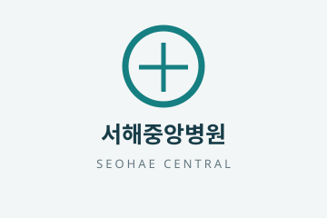
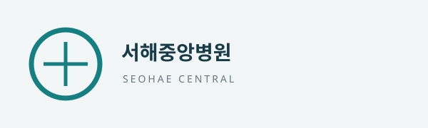
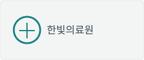
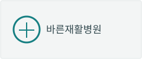
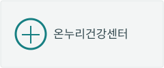
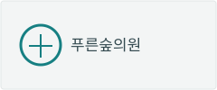
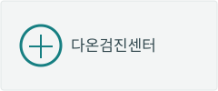
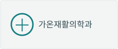
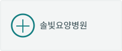

한글·영문 세로 배치
SVG 내려받기

환자와 지역의 일상을 살피는 종합병원입니다.
여러 진료과와 전문센터가 협력해 질환별 진료와 검사를 제공합니다.
외래 진료부터 입원 치료와 응급 상황까지 필요한 절차를 안내합니다.
1987 년
28 개
320 여개
45 여명

의료기관이 드물던 지역에서 의원을 열었습니다. 이후 종합병원을 세워 주민들의 진료를 맡아 왔습니다.
질환을 치료하고 주민의 건강을 돌보며 지역사회 발전에 참여하는 일을 병원의 역할로 삼고 있습니다.
현대적인 진료 환경과 의료 장비를 갖추고 여러 진료 분야를 운영합니다. 환자 상태와 질환에 따라 필요한 진료과가 협력하고, 검사와 치료 과정을 안내합니다.
환자의 건강 상태를 살펴 타 병원 의뢰와 협진 절차를 설명합니다.
환자와 보호자가 진료 과정과 이용 절차를 알 수 있도록 필요한 내용을 설명합니다.
진료 의뢰가 필요한 경우 관련 기관과 정보를 주고받는 절차를 안내합니다.
진료 정보는 업무에 필요한 범위에서 확인하고 관리합니다.
각 진료 분야의 운영 시간과 방문 절차를 안내합니다.
접수와 예약에 필요한 사항은 병원 안내 창구에서 확인하세요.
의료 취약 지역을 찾아가는 진료와 생활이 어려운 주민을 위한 의료 지원에 참여합니다.


한빛의료원
바른재활병원
온누리건강센터
푸른숲의원
다온검진센터
가온재활의학과
솔빛요양병원청록색 S자 곡선과 하단의 수평선으로 심벌을 구성했습니다.
상하·좌우 조합은 심벌과 서해중앙병원 국영문 표기를 함께 보여줍니다.


